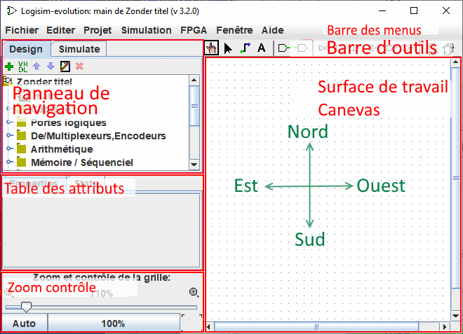

La surface de travail (Canevas)
La surface de travail est vraiment la partie la plus visible de Logisim-evolution c'est la que vous dessinerez vos circuits et leur symbole pour enfin en simuler le fonctionnement.

Elle n'est composée que de quelques éléments:
Les barres de défilement horizontal et vertical : Elles fonctionnent comme dans la plupart des programmes il suffit de glisser les curseurs pour déplacer la vue sur d'autres parties du dessin. Elles peuvent aussi se manipuler depuis le clavier ou la souris avec les combinaisons suivantes :
- Molette souris ou touches Flèche bas/haut : Défilement vertical
- Alt-Molette souris ou touches Flèche droite/gauche: Défilement horizontal
- Touche PgUp : Aller en haut de page
- Touche PgDn : Aller au bas de page
Les indicateurs d'excursion quand le schéma est plus grand que la surface d'affichage des indicateurs s'affichent. Les guides affichés dans les angles et/ou sur les côtés indiquent les directions ou le dessin s'étend. Ci-dessous un exemple des indicateurs du haut de page.

Le bouton de centrage  Il permet de placer le centre du schéma au centre de la surface de travail.
Il permet de placer le centre du schéma au centre de la surface de travail.
Le zoom : En bas sur la gauche se trouve le contrôle du facteur de zoom. vous pouvez le modifier en glissant le curseur ou a l'aide d'un des deux boutons à gauche et droite du taux ou encore avec Ctrl - molette souris dans la surface de travail.

Le bouton 100% : Adapte le zoom pour afficher le schéma a sa taille réelle.
Le bouton Auto : Adapte le zoom pour que l'ensemble du schéma soit visible.
Le bouton grille : À droite du zoom, bascule alternativement du mode "grille affichée" au mode "grille invisible".
À droite du zoom, bascule alternativement du mode "grille affichée" au mode "grille invisible".
Suite: Les menus.